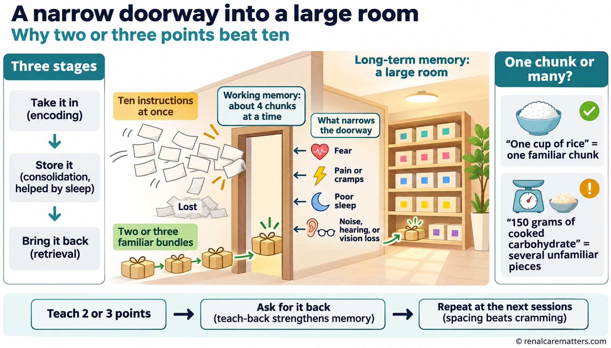
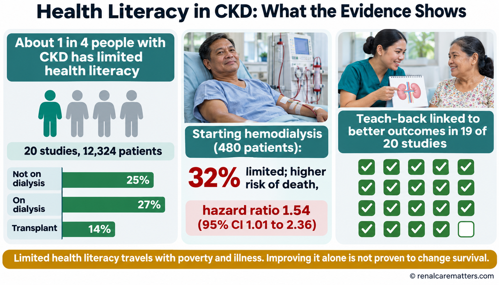
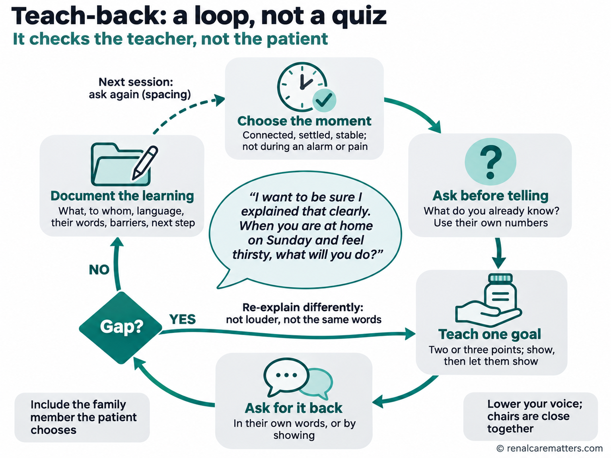
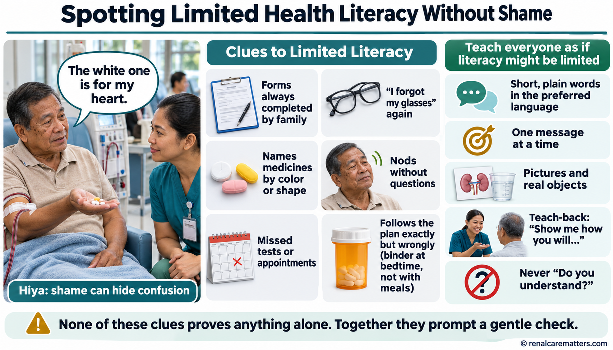
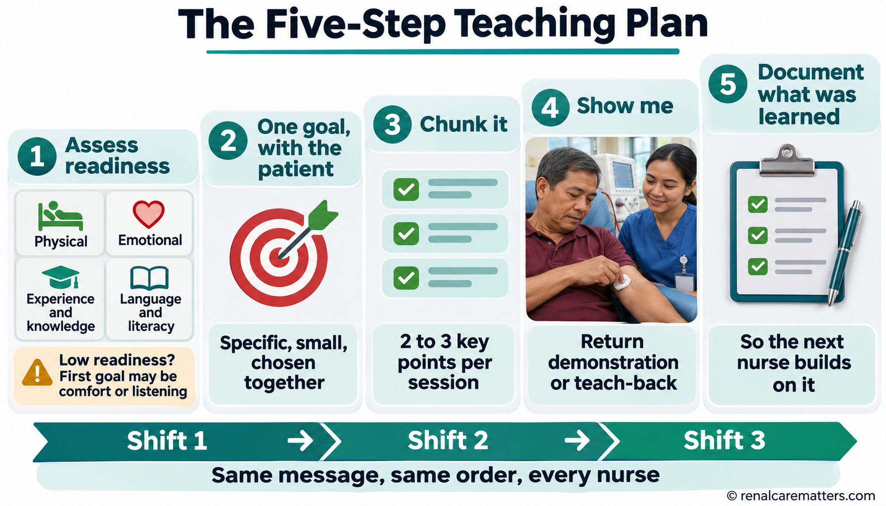
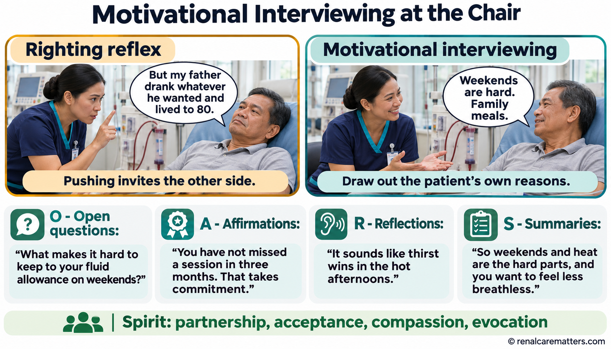
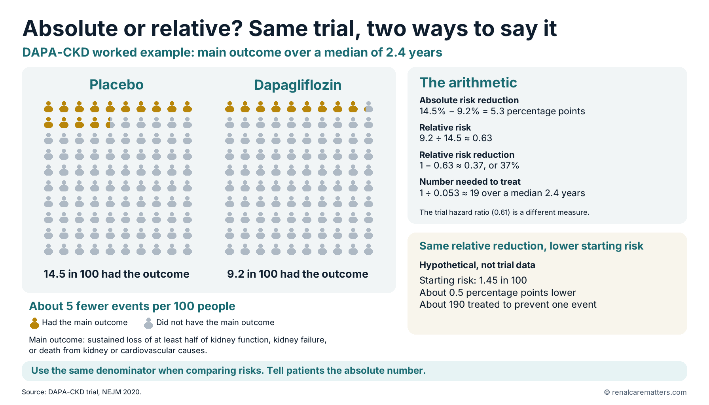
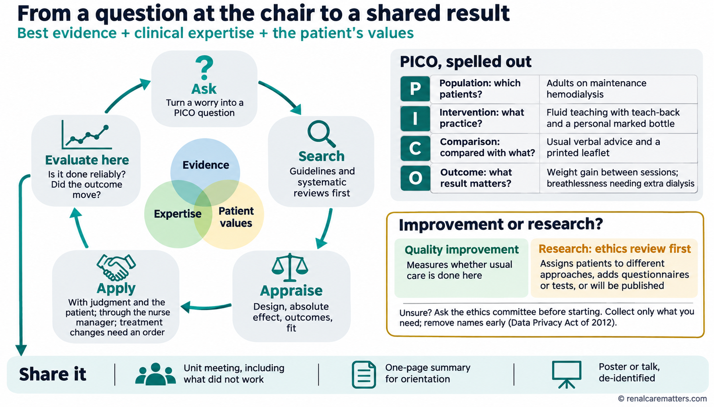

After this module you should be able to
- Explain how working memory, attention, anxiety, sleep, and kidney disease shape what a patient can learn, and adapt teaching to those limits.
- Summarize the evidence on limited health literacy in chronic kidney disease, on teach-back, and on education before kidney failure, using calibrated language.
- Use teach-back, chunking, and spaced repetition to confirm and reinforce understanding without testing or shaming the patient.
- Plan, deliver, and document a short teaching episode during a hemodialysis session, involving the family members the patient chooses.
- Recognize possible limited health literacy and numeracy without shaming the patient, and adapt language, interpreters, family involvement, and written materials.
- Build a teaching plan that assesses readiness, sets one goal, uses chunking, demonstration, return demonstration, and teach-back, and documents learning.
- Use basic motivational interviewing skills, including open questions, reflections, and eliciting change talk, to support a goal the patient sets.
- Appraise a study or guideline by its design, absolute and relative effects, outcomes, and certainty grade, and follow the steps of evidence-based practice from a PICO (population, intervention, comparison, outcome) question to sharing results.
A narrow doorway into a large room
Every module so far has ended with something to teach. How much to drink between sessions. Which foods carry potassium. How to press a needle site that rebleeds at home. When cloudy fluid on peritoneal dialysis (PD) means a call to the unit. Teaching runs through all of nephrology nursing. This module asks two questions that sit under all of it: how does a person actually learn, and how do you know which advice deserves to be taught at all?
The doorway and the room. Picture memory as a large room reached through a narrow doorway. The room is long-term memory. It is enormous; a person can store a lifetime of recipes, routes, and names there. The doorway is working memory. It lets only a few items through at once. Whatever you say crowds at the doorway. If too much arrives together, most of it never gets in. Fear, pain, a pounding headache, or a sleepless night narrow the doorway further.
The picture has a limit. The doorway is not a fixed size. Things the patient already knows pass through as single bundles. A cook who measures rice by the cup takes “one cup of rice” through the doorway as one item. “150 grams of cooked carbohydrate” arrives as several unfamiliar pieces. Connecting new advice to what the patient already knows is what widens the doorway.
Most patients can learn what they need, if it comes in small pieces, in their own words, more than once. A few cannot, because of confusion, poor vision, or a crisis at home, and they need a different plan. Your work is to pass a few things through the doorway at a time, check that they were stored, and bring them out again often enough that they stay easy to find.
The second half of the job. You teach what the team believes is true and useful. That belief should rest on evidence, not on habit (“we have always told patients this”). The later sections give you the tools to read a study, to tell an association from a proven effect, to read a guideline’s grade, and to turn a question raised at the chair into a small, ethical project. Throughout, the module refers to chronic kidney disease (CKD) and hemodialysis (HD) as well as PD.
What this module does not repeat. Shared decision-making about treatment choices is in Module 5. Screening for depression, delirium, and cognitive problems is in Module 14. Quality audits, improvement cycles, and the capstone are in Module 12. Here the focus is the teaching itself and the evidence behind it.
Teach less, more often, and check every time. A patient who nods has heard you. A patient who can tell it back has learned it.
The science of learning and memory in a person with kidney disease
Three stages. Learning has three steps, and each can fail. Encoding is taking information in through attention and working memory. Storage, or consolidation, turns it into a durable long-term memory. That process continues for hours to days afterward. Retrieval brings it back out when it is needed: in the kitchen on a Sunday, for example, when the patient is deciding whether to have a second bowl of soup.
Working memory is small. Experimental work suggests that adults can hold only about four meaningful units, or chunks, in mind at once when they cannot rehearse them or link them to what they already know.1 A chunk can be a single number or a whole familiar idea. So a list of ten instructions at the end of a session overwhelms almost anyone, and grouping advice into two or three familiar bundles works better. A widely cited review of patients’ memory for medical information concluded three things. Much of what patients are told is forgotten quickly. The more is said, the less is remembered. And part of what is remembered is remembered wrongly.2
Retrieval strengthens memory. Being asked to recall something is not only a test; it changes the memory. In a classic experiment, students who practiced recalling a passage remembered much more of it a week later than students who simply reread it, even though the rereaders felt more confident.3 The participants were students and the material was a reading passage, not a care plan. The mechanism is still the one behind teach-back. When the patient explains the plan in their own words, they are not merely showing that they understood. They are practicing retrieval, and the memory becomes stronger.
Spacing beats cramming. A meta-analysis of hundreds of experiments found that learning spread over several sessions is retained better than the same amount massed into one. The best gap between sessions grows with how long the memory must last.4 A dialysis unit is unusually well placed to use this. You see the patient three times a week, and you can return to one key point at the next session and the one after.
Sleep consolidates. Sleep helps turn newly learned material into stable memory.5 Many people on dialysis sleep poorly (Module 14), so a lesson given after a sleepless night may need more repetition.
Anxiety captures attention. Anxiety draws attention toward threat and away from the task at hand, so a frightened person processes new information less efficiently.6 A patient in the first weeks of dialysis, or one just told that an access is failing, may hear little beyond the frightening word. Reassurance, and a plan for when the information will be repeated, come before detail.
Kidney disease affects the brain. In a study of 374 people aged 55 and older on HD in the United States, about seven in eight of those tested had at least mild cognitive impairment, and more than a third had severe impairment. Yet only 2.9% had a documented history of a cognitive problem.7 This was a single cross-sectional study, and it shows how common impairment was, not what caused it. Possible contributors include stroke and small-vessel brain disease, diabetes, retained uremic solutes, anemia, and swings in blood pressure during treatment. Memory and attention may also vary across the dialysis cycle, for example being worse when the patient is fluid-overloaded or hypotensive. You cannot assume that a nod means the information went in. Nor can you assume that an adult who fails to remember is careless.
The senses are the entry points. Age-related hearing loss, the noise of machines and alarms, diabetic eye disease, cataracts, and forgotten reading glasses all block information before it reaches working memory. A patient who cannot hear the consonants in a noisy unit may agree to everything and remember nothing.
| Factor | What it does to learning | What you do |
|---|---|---|
| Small working memory | Long lists overflow; most items are lost | Two or three points per session; group advice into familiar bundles |
| Fast forgetting | Correct understanding at the chair fades by the next day | Repeat the key point at the next sessions; give a simple reminder to take home |
| Retrieval strengthens memory | Recalling the plan makes it stick better than rereading it | Teach-back every time; ask again at the next session |
| Anxiety, pain, cramps, nausea | Attention is pulled toward the threat or the symptom | Treat or wait for the symptom to settle; reassure first; teach later |
| Sleep loss | Less consolidation of new learning | Expect to repeat; keep the lesson short |
| Cognitive impairment, uremia | Slower processing, poorer recall, difficulty with multi-step tasks | Simplify; use routines and visual cues; involve the family; report new or worsening confusion |
| Hearing or vision loss | Information never reaches working memory | Face the patient, reduce background noise where possible, check glasses and hearing aids, use large print and pictures |
When a patient forgets, ask which stage failed: did it never get in, did it not stay, or can they not find it when they need it? Each has a different fix.

What is known about health literacy, teach-back, and education before kidney failure
What health literacy means. Health literacy is more than the ability to read. A widely used definition, built from a systematic review of earlier definitions, describes it as the knowledge, motivation, and skills to find, understand, appraise, and apply health information in order to make everyday decisions about health care, disease prevention, and health promotion.8 A university graduate can have limited health literacy about dialysis. A patient with little schooling can manage PD exchanges flawlessly. It is a fit between a person and the demands placed on them, not a fixed trait.
How common is limited health literacy in CKD? A systematic review pooled 20 studies of 12,324 patients. It estimated that about one in four people with CKD has limited health literacy: 25% of those not on dialysis, 27% of those on dialysis, and 14% of transplant recipients.9 Nineteen of the 20 studies came from the United States. The studies differed widely, and their quality was low to moderate. Limited health literacy was consistently linked with lower socioeconomic status. No pooled estimate for Philippine kidney patients has been published. This course therefore adopts the largely United States figure as its working estimate: plan for about one patient in four to have limited health literacy, and teach every patient as if it might apply.
Is it linked with outcomes? In a cohort of 480 people starting HD in the United States, 32% had limited health literacy. Limited health literacy was associated with a higher risk of death (hazard ratio 1.54; 95% confidence interval 1.01 to 2.36) after adjustment for age, sex, race, and diabetes.10 The lower end of that interval sits just above 1, so the true effect could be small. A later systematic review found limited health literacy independently associated with hospital admissions, emergency visits, missed dialysis sessions, cardiovascular events, and, in cohort studies, death. Most of its 29 studies were of poor quality, and the authors concluded that robust evidence of a causal effect is lacking.11
In plain terms: limited health literacy travels with worse outcomes. It also travels with poverty, other illness, and poorer access to care. It is not proven that improving health literacy alone would change survival.
Teach-back. In a systematic review of 20 studies across many settings, teach-back was associated with better outcomes in 19. The outcomes ranged from knowledge and recall to hospital readmissions and quality of life. The studies were varied and of mixed quality.12 Many measured knowledge or recall, which matter only if they change what the patient does. Module 5 introduced teach-back for treatment choices. The physiology in this module explains why it works.
Education before kidney failure. In a randomized trial of 70 patients with advanced CKD, adding a two-part educational program to usual predialysis care raised the proportion who intended to start with a self-care form of dialysis, such as PD or self-care HD, from 50% to 82.1%.13 The program combined booklets and a short video with a small-group interactive session. The outcome was an intention, not the treatment actually received. A systematic review of education and PD combined that single trial with observational studies. In those studies, predialysis education was associated with about twice the odds of choosing PD and more than three times the odds of starting on it. Because most of the studies were observational, education cannot be said to cause the choice.14
The direction of the evidence is consistent. Patients who are taught about all the options, early and well, more often choose options other than in-center HD. Whether a given patient should choose them is a separate decision, based on that patient’s values (Module 5).
Motivational interviewing. A meta-analysis of 72 randomized trials found that motivational interviewing outperformed traditional advice-giving in roughly three out of four studies across a range of conditions. Effects were also seen in brief encounters of about 15 minutes, and more reliably when there was more than one encounter.15 The basics are taught in a later section of this module.
What remains uncertain. Which teaching methods work best for people on dialysis in Philippine settings, in Filipino and the regional languages, has hardly been studied. Most of the evidence above comes from high-income, English-speaking countries. That gap is exactly the kind of question a unit can begin to answer for itself, using the evidence-based practice steps at the end of this module.
Limited health literacy is common, hidden, and associated with worse outcomes. The safe response is not to test patients but to teach every patient clearly and check with teach-back.

Teaching in the dialysis chair
The dialysis unit offers something most of health care does not: about four hours, three times a week, with the same patient. Used well, that time is the best classroom in nephrology. Used badly, it becomes a stream of reminders the patient has learned to tune out.
Choose the moment. Teaching usually goes best after the patient is connected, settled, and stable. Teach before fatigue, cramps, or low blood pressure set in near the end, when attention may already be on going home. Do not teach during an alarm, a hypotensive episode, or cannulation pain. If the patient is drowsy, confused, or distressed, postpone, document why, and plan the next opportunity.
Ask before telling. Start with what the patient already knows and wants: “What have you been told about your weight gain between sessions?” or “What would you like to understand better about your blood results?” The answer shows you the gaps. It also connects new information to existing knowledge, which is what widens the doorway.
Use the patient’s own data. “You came in 3.5 kilos above your target weight today” is more memorable than a general talk about fluid. A result the patient can see on the flow sheet, a potassium compared with last month, or the ankles that swelled after a heavy weekend make the lesson personal.
One goal, two or three points. Pick the single most important thing for this patient now, and limit the explanation to two or three points. A patient with a dangerous potassium needs the potassium lesson today. The phosphate binder lesson can wait until Thursday.
Show, then let them show. For any skill, from pressing a bleeding needle site to measuring a fluid allowance with the patient’s own cup, demonstrate it, then watch the patient or family member do it.
Close the loop with teach-back. Put the burden on yourself: “I want to be sure I explained that clearly. When you are at home on Sunday and feel thirsty, what will you do?” If the answer has a gap, explain again in a different way, not louder and not in the same words, and ask again. Teach-back checks the teacher. It is never an examination of the patient.
Include the family the patient chooses. In many Filipino households, the person who shops, cooks, measures water, or gives medicines is not the patient. Ask the patient who should hear the information, and teach that person too, with the patient’s agreement.
Mind privacy and dignity. Dialysis chairs are close together. Lower your voice, draw a curtain where one exists, and avoid discussing weight gain, missed sessions, or test results where other patients can hear. A patient who feels embarrassed in front of others is unlikely to ask questions.
Repeat across sessions. Return to the same point at the next session and the one after, and ask the patient to explain it again. This uses spacing and retrieval together. It also shows you whether the change is happening at home.
Document the learning, not just the teaching. “Health teaching given” tells the next nurse nothing. Record what was taught, to whom, the method and language, the teach-back result in the patient’s own words where possible, any barrier noticed (hearing, vision, language, distress), and the plan for the next session. Report to the physician or dietitian when a learning barrier changes what the patient can safely do, for example a patient on PD who can no longer perform an exchange correctly.
Stay within scope. You teach the plan that has been ordered and agreed; you do not change it. When a patient asks whether to stop a medicine, take a new supplement, or change a dose, explain what is known, give no new instruction, and refer the question to the physician.
One goal, two or three points, a teach-back, and a note in the patient’s words. Then ask again at the next session.

Spotting limited health literacy without shaming, and teaching so that everyone understands
Limited health literacy is common and usually hidden. Adults who struggle with reading or numbers have often spent a lifetime covering for it, and many feel ashamed. In the Philippines, hiya, a strong sense of shame or embarrassment, shapes how people behave in front of others. A patient may say “opo” to everything rather than admit that a leaflet means nothing to them. Your task is not to catch people out. It is to teach in a way that works whatever their literacy, and to notice when extra help is needed.
Teach everyone as if literacy might be limited. Limited health literacy cannot be seen, and it affects about one in four people with CKD in pooled studies.9 The safest default is to make every explanation clear and short, and to check it with teach-back, for every patient. Patients who read well lose nothing from a clear explanation. An ill or anxious reader gains from it too.
Clues that a patient may need more help. None of these proves anything alone. Together they prompt a gentle check.
- Forms left incomplete, or always completed by a family member.
- “I forgot my glasses; I’ll read it at home,” said again and again.
- Naming medicines by color or shape, not by name, or being unable to say what each is for.
- Nodding without questions, or questions that show the basic message was missed.
- Missed appointments or tests, or a plan followed exactly but wrongly (for example, a phosphate binder taken at bedtime instead of with meals).
- Asking another patient to read the scale or a sign, as Mang Ernesto did.
Asking without shaming. A single, normalizing question can help. In a study that developed brief screening questions in one United States clinic, “How often do you have someone help you read hospital materials?” was the most accurate of the questions tested for identifying inadequate health literacy. It has not been tested in Filipino or the regional languages.16 Frame it as routine: “Many of our patients find hospital papers hard to read. Does someone usually help you with them?” Never test reading in front of others. Never write “illiterate” in the record. Record instead what helps: “Prefers spoken explanation in Cebuano; daughter reads written instructions.”
Numeracy. Health numeracy is the ability to use numbers in health decisions: reading a scale, counting a fluid allowance in milliliters, understanding that a potassium of 6.2 is higher than 5.8, or making sense of “a 30% chance.” Many people who read well struggle with numbers. Practical adaptations:
- Turn amounts into household objects the patient owns: their own glass, a marked bottle, a rice cup, a soup bowl. Measure the patient’s own cup once, together, so the conversion is theirs.
- Say risks as frequencies with the same denominator: “about 1 in 4 people” and “about 1 in 10 people,” not “25%” and “a tenth.”
- Use direction and color instead of numbers where possible: “Your potassium is in the red zone today.” The lab-to-action card in the readings is built this way.
- Do the arithmetic for the patient and show the answer: “Your target weight is 58 kilos. Today you are 61.5. That is three and a half kilos of extra water, about three and a half of these one-liter bottles.” It is clearer when the bottles are on the table than when the numbers are said aloud. Choose comparisons the patient recognizes.
Plain language. Use the patient’s words, short sentences, the active voice, and one idea per sentence. Keep a medical word when the patient will hear it again (potassium, fistula, dialysis), but explain it the first time and use it consistently.
| Instead of | Try |
|---|---|
| Fluid restriction | Drink less: everything you drink in a day must fit in this bottle |
| Interdialytic weight gain | The extra water weight you gain between sessions |
| Dry weight | Your target weight: your weight when there is no extra water in your body |
| Hyperkalemia | Potassium too high, which can make the heart beat dangerously |
| Hypotension | Blood pressure too low, which can make you dizzy or faint |
| Edema | Swelling from extra water, often in the feet and legs |
| Take with meals | Take with your first spoonful of rice at breakfast, lunch, and dinner |
| Noncompliant | (Do not use.) Describe what happened and what got in the way |
Filipino and the regional languages. Filipino and English are the official languages. Many patients still think and feel most clearly in a regional language such as Cebuano, Ilocano, Hiligaynon, Kapampangan, Bikol, Waray, or Pangasinan. Many speak a mixture of Filipino and English, and that mixture is often the clearest register at the chair. Medical words often have no exact equivalent. A literal translation of a leaflet can be correct word by word and still make no sense. Teach in the language the patient chooses. When the unit translates written material, test it with a few patients before printing it in quantity.
Interpreters and family. When no nurse speaks the patient’s language, a trained interpreter or a bilingual staff member is better than a family member. A relative may filter bad news, add advice of their own, or be someone the patient does not want hearing private information. Children should not interpret clinical information. If a family member does interpret, ask the patient’s permission, keep sentences short, speak to the patient rather than to the interpreter, and use teach-back through the interpreter to check what arrived. Family members also have their own learning needs: the person who cooks needs the potassium lesson even if the patient does not.
Written materials. A leaflet supports teaching. It never replaces it. Good written material for kidney patients:
- States, at the top, the one or two things the reader should do.
- Uses short sentences, everyday words, large print, plenty of white space, and headings that are questions the patient would ask.
- Uses pictures of real local foods, containers, and actions, not abstract diagrams.
- Covers one topic per page and avoids long lists of forbidden foods. It shows what the patient can eat as well as what to limit.
- Exists in the languages the unit’s patients actually use, and has been tried on patients before use.
- Is gone through together with the patient, marking the parts that apply, rather than handed over.
The site guides in the readings are written for patients. Review one before you recommend it, and choose the one that fits the patient’s question, not the longest one.
Record what helps a patient learn, never what the patient cannot do. “Daughter reads written instructions” protects the patient; “illiterate” shames them.

The teaching plan: readiness, one goal, chunking, return demonstration, and documented learning
Most teaching in a dialysis unit happens in short episodes spread over many weeks. A teaching plan ties them together. Every nurse on every shift then teaches the same message, in the same order, building on what the last nurse did. Conflicting advice from different staff (“the morning nurse said one bottle, the afternoon nurse said two glasses”) is one of the commonest reasons patients give up trying.
1. Assess readiness. A patient is ready to learn when four things line up.
| Area | Questions to ask yourself |
|---|---|
| Physical | Is the patient comfortable, alert, and stable? Are pain, cramps, nausea, breathlessness, or low blood pressure present? Can they see and hear you? |
| Emotional | Are they frightened, grieving, angry, or depressed (Module 14)? Have they just received bad news? |
| Experience and knowledge | What do they already know, from earlier teaching, from relatives on dialysis, or from social media? What have they tried before? |
| Language and literacy | Which language do they prefer for health conversations? Do they read comfortably? Who helps them at home? |
If readiness is low, the first goal is not information. It may be symptom control, reassurance, or simply listening.
2. Set one goal, with the patient. Ask what matters to them. Then agree on a single goal that is specific, achievable, and observable. Compare “Teach renal diet” (the nurse’s task, not a goal) with “By Friday, Mrs. Santos will be able to name three low-potassium vegetables she likes and show how she will soak and boil them, as taught by the dietitian.” The second says what she will do, by when, and how you will know.
3. Chunk and sequence. Break the goal into two or three points per session. Order them by safety: what could harm the patient soonest comes before what improves long-term health. A typical sequence for a new HD patient starts with access protection and emergency symptoms, then fluid, then potassium, then phosphate and medicines.
4. Demonstrate, then ask for a return demonstration. Skills are learned by doing. Show the whole skill at normal speed, then slowly in steps, explaining the reason for each step. Then the patient or caregiver does it while you watch, without taking over. Correct one thing at a time, and let them repeat it. Skills suited to return demonstration include feeling the thrill of a fistula every day, pressing a needle site that rebleeds, checking a catheter dressing, measuring the daily fluid allowance, weighing at home, taking a home blood pressure, and, for PD, the full exchange (Module 10).
5. Confirm with teach-back. Ask for the explanation in the patient’s own words. Explain differently if there is a gap, and repeat until it is right. Then ask again at the next session. The second teach-back, days later, is the real test of learning.
6. Document learning. A useful teaching record contains:
- The goal and the session’s points.
- Who was taught (patient, named family member), and with whose agreement.
- Language, method (talk, demonstration, picture, object), and materials given.
- The evidence of learning: the teach-back in the patient’s words or the return demonstration, with what was correct and what needed correcting.
- Barriers noticed, and how they were handled.
- The next step, and when.
An example of three linked episodes for one goal:
| Session | Points taught | Evidence of learning | Next step |
|---|---|---|---|
| Monday | Why extra water makes breathing hard; the bottle as the day’s allowance (as ordered) | Patient explains in Kapampangan why his ankles swell; fills bottle correctly | Teach wife on Wednesday |
| Wednesday | Soup and fruit count as fluid; spreading the allowance across the day | Wife names the family’s usual soups and shows a smaller bowl she will use | Review weight gain Friday |
| Friday | Review; what to do when thirsty (ice chips counted in the allowance, rinsing the mouth without swallowing) | Patient recalls the bottle rule unprompted; weight gain smaller than Monday | Recheck at each session for two weeks; report trend |
When teaching does not work. If a patient still cannot do what was taught after several well-planned attempts, change the method, not the volume. Look again for a barrier you missed: vision, hearing, cognition, depression, cost, a household that cooks for everyone at once. Discuss it at the care conference. Repeated teaching that fails is information about the plan, not proof that the patient does not care.
The second teach-back, days later, is the real test. Plan for it before you finish the first.

Motivational interviewing basics: helping patients find their own reasons to change
Knowing what to do and doing it are different things. Most patients who gain too much fluid between sessions know they should drink less. The difficulty is thirst, habit, family meals, hot weather, and the feeling that one more glass cannot matter. More information does not fix that. Motivational interviewing is a way of talking that helps a person resolve their own mixed feelings about change, instead of being pushed by you.
The trap of the righting reflex. When you see a patient heading toward harm, the natural urge is to correct, warn, and argue for change. Under that pressure, many people defend the other side: “But my father drank whatever he wanted and lived to 80.” The more you argue for change, the more the patient argues against it, and people tend to believe what they hear themselves say. Motivational interviewing reverses this. The patient, not the nurse, voices the reasons for change.
The spirit. The conversation is a partnership. You accept the patient’s right to decide, show compassion, and draw out the patient’s own ideas instead of installing yours.
Four core skills.
| Skill | What it is | Example at the chair |
|---|---|---|
| Open questions | Questions that cannot be answered with yes or no | “What makes it hard to keep to your fluid allowance on weekends?” |
| Affirmations | Genuine recognition of the patient’s strengths and efforts | “You have not missed a single session in three months. That takes real commitment.” |
| Reflections | Saying back what you heard, sometimes adding the meaning or feeling beneath it | “The heat makes the thirst unbearable, and saying no to drinks at family gatherings feels like being left out.” |
| Summaries | Collecting what the patient said, especially their own reasons for change, and handing it back | “So, the breathlessness frightens you, you want to see your grandson’s graduation, and the weekends are the hardest part. Did I get that right?” |
Change talk. Listen for, and gently invite, the patient’s own statements in favor of change: desire (“I want to stop feeling so breathless”), ability (“I could use a smaller glass”), reasons (“I don’t want to end up in the emergency room again”), and need (“I have to do something about this”). Statements against change (“I just can’t control my thirst”) are called sustain talk. Do not argue with them. Reflect them, then ask about the other side: “Thirst is hard to fight. And at the same time, you said the breathless nights scare you. What would help on those days?”
Two useful questions. Ask, “On a scale from 0 to 10, how important is it to you to keep your weight gain down?” and then, “Why a 6 and not a 3?” The answer is the patient’s own list of reasons. Ask the same about confidence. “What would it take to move from a 4 to a 6?” reveals the barriers and the support needed.
Ask, offer, ask. When information is needed, ask permission and ask what the patient already knows. Offer the information briefly and neutrally. Then ask what they make of it: “Would it be all right if I told you what happens to the heart when potassium is high? … What do you think about that?”
Goal setting. When the patient is ready, help them choose a goal that is theirs: small, specific, and measurable, with a plan for the hardest moment. “This week I will use the small blue glass at home. When my son-in-law brings soft drinks on Sunday, I will take half a glass with ice.” Write the goal down in the patient’s words, ask how confident they are, and review it at the next session without judgment. If the goal was not met, ask “What got in the way?”, not “Why didn’t you?”
What the evidence suggests, and its limits. In the meta-analysis of 72 randomized trials described earlier, motivational interviewing outperformed traditional advice in most studies. Effects were seen in about four in five studies when psychologists and physicians delivered it, and in fewer than half when other health care providers did.15 That suggests training and practice matter. It does not tell us how well nurses in Philippine dialysis units will do. Reading this section teaches you the vocabulary, not the skill. Role-play with feedback, as in this module’s competencies, is how the skill begins.
Boundaries. Motivational interviewing supports the plan the team and patient have agreed. It is not used to steer a patient toward a choice you prefer, such as one dialysis modality over another (Module 5). It does not replace referral when the difficulty is depression, cognitive decline, or a crisis (Module 14).
When you hear yourself arguing for change, stop and ask a question. The patient’s own reasons move them further than yours.

Questions to ask of a study or a guideline
Patients bring you claims every week: a supplement that “cleans the kidneys,” a video saying dialysis can be stopped with a special diet, a relative’s advice. You also read guidelines, journal articles, and drug company leaflets. The same few questions sort strong evidence from weak.
1. What kind of study is it? Designs differ in how well they protect you from being misled.
| Design | What it does | What it can show |
|---|---|---|
| Systematic review and meta-analysis of randomized trials | Finds all relevant trials by a stated method and combines them | The most reliable estimate of an effect, if the trials were good |
| Randomized controlled trial | Assigns people to treatment or comparison by chance | Cause and effect, because chance balances known and unknown differences between groups |
| Cohort study | Follows groups with and without an exposure over time | Association; strong for harms and for questions that cannot be randomized |
| Case-control and cross-sectional studies | Compare people with and without an outcome, or measure everything at one time | Association; useful for generating hypotheses and estimating how common something is |
| Case reports and series | Describe one or a few patients | That something is possible; an alert, not a proof |
| Expert opinion, testimonials | Experience or belief | A starting point only; a testimonial is not evidence of effect |
The ranking is a guide, not a law. A large, well-done cohort can be more trustworthy than a tiny, poorly run trial. Some questions, such as transplantation versus dialysis (Module 5), can never be randomized.
2. Randomized or observational: cause or association? In an observational study, the groups may differ in ways that explain the result. This is confounding. Limited health literacy is associated with higher mortality on HD. But people with limited health literacy are also, on average, poorer and have more illness. Adjustment reduces such differences but cannot remove them fully.10,11 Randomization is the only design that balances differences nobody measured. That is why this module uses “reduces” for trial results and “is associated with” for observational ones.
3. How big is the effect: absolute or relative? Work through an example with the DAPA-CKD trial, which Module 2 introduced. It randomized 4,304 people with CKD to dapagliflozin or placebo. Over a median of 2.4 years, the main combined outcome (a sustained halving of kidney function, kidney failure, or death from kidney or cardiovascular causes) occurred in 9.2% of people given dapagliflozin and 14.5% of those given placebo.17
- Absolute risk reduction = 14.5% − 9.2% = 5.3 percentage points: about 5 fewer events for every 100 people treated.
- Relative risk = 9.2 ÷ 14.5 = 0.63, so the relative risk reduction = 1 − 0.63 = 0.37, or about 37%.
- Number needed to treat = 1 ÷ 0.053 = about 19: about 19 people treated for 2.4 years to prevent one event. The trial reported the same figure.17
The trial itself reported a hazard ratio of 0.61. That is a relative measure that takes the timing of events into account. It is close to, but not the same as, the simple relative risk calculated above.17
Now imagine, as a hypothetical illustration and not trial data, the same 37% relative reduction in a much lower-risk group whose event rate without treatment is 1.45%. The absolute reduction would be only about 0.5 percentage points, and about 190 people would need treatment to prevent one event. The relative reduction sounds the same in both groups. The absolute benefit to a patient depends on their starting risk. Advertisements and headlines usually quote the relative figure, because it sounds larger. When you explain benefit to patients, the absolute figure, said as a frequency (“about 5 in 100 people”), is more honest and easier to understand.
4. How precise is it? The 95% confidence interval shows the range of effects reasonably compatible with the data. In the systematic review of predialysis education, the single small randomized trial gave an odds ratio of 4.60 for choosing PD, with a 95% confidence interval from 1.19 to 17.74.14 An effect is likely, but its size is very uncertain. When an interval for a ratio crosses 1, the study cannot exclude no effect at all.
5. Which outcomes were measured? A surrogate outcome is a measurement thought to predict what matters: a laboratory value, a dialysis adequacy number, or a rate of decline in kidney function. A patient-important outcome is something patients notice and value: living longer, avoiding hospital, starting dialysis later, feeling less tired or itchy, being able to work. Treatments that improve a surrogate do not always improve what patients care about. A study that reports only a better number answers a smaller question than it may seem to. Many trials, including DAPA-CKD, use a combined outcome that mixes the two kinds. Read which parts drove the result.
6. Who was studied, and does that match my patient? Check the age, illness severity, country, and setting. A trial in moderate CKD may not apply to a patient already on dialysis. A study from a high-income country may not reflect a patient who pays out of pocket.
7. Who paid, and who says so? Industry funding does not make a result wrong, but note it. DAPA-CKD, for example, was funded by the maker of the drug.17 Its design, large, randomized, and placebo-controlled, is what lets you judge the result on its merits. A claim made only by the seller of a product, with no published comparison, is not evidence.
Guidelines and their grades. Guidelines combine the evidence for busy clinicians. The best of them state how strong each recommendation is and how certain the evidence behind it is. Kidney Disease: Improving Global Outcomes (KDIGO), the international guideline body for kidney care, grades each recommendation with a number and a letter.18
| Part of the grade | Meaning |
|---|---|
| Level 1, “We recommend” | Strong: most patients would want this course of action, and it can serve as a standard for most |
| Level 2, “We suggest” | Weak or conditional: many patients would want it but many would not; the decision depends on the patient’s values and circumstances |
| A | High certainty: the true effect is likely close to the estimate |
| B | Moderate certainty: the true effect is probably close, but may be substantially different |
| C | Low certainty: the true effect may be substantially different |
| D | Very low certainty: the estimate is very uncertain and often far from the truth |
| Practice point | Ungraded advice from expert judgment, offered where a formal review of evidence was not done |
So “1A” means a strong recommendation backed by high-certainty evidence. “2D” means a conditional suggestion resting on very uncertain evidence. A strong recommendation can rest on low-certainty evidence when the benefits clearly outweigh the harms; the two parts are judged separately. Never translate a KDIGO grade into another system’s labels. If a unit routine rests only on a 2D suggestion or a practice point, you have found a good question for evidence-based practice.
Whenever you hear a percentage reduction, ask: out of how many, over how long, and in people like my patient?

Evidence-based practice: from a question at the chair to a shared result
Evidence-based practice is the conscientious and judicious use of the best current evidence, combined with clinical expertise and the patient’s values and preferences, in decisions about care.19 All three parts matter. Evidence without judgment is applied blindly. Judgment without evidence repeats habit.
It differs from the improvement work in Module 12 in its starting question. Evidence-based practice asks, “What is the best thing to do?” Quality improvement asks, “Are we reliably doing it here?” The two connect. A practice chosen through evidence is then audited and refined with the improvement cycles and measures taught in Module 12.
Step 1: Ask a clear, answerable question. A vague worry (“our patients don’t follow the fluid advice”) becomes answerable when you frame it with PICO: population, intervention, comparison, outcome.20
| Element | Question | Example |
|---|---|---|
| Population | Which patients? | Adults on maintenance HD |
| Intervention | What practice or exposure? | Teaching fluid limits with teach-back and a personal marked bottle |
| Comparison | Compared with what? | Usual verbal advice and a printed leaflet |
| Outcome | What result matters? | Average weight gain between sessions; episodes of breathlessness needing extra dialysis |
The question becomes: “In adults on maintenance HD, does fluid teaching with teach-back and a personal marked bottle, compared with usual verbal advice and a leaflet, reduce weight gain between sessions?” Notice that weight gain is a surrogate; episodes of breathlessness are closer to what the patient feels.
Step 2: Search efficiently. Start at the top of the evidence pyramid. Look first for a current guideline (KDIGO and national kidney guidelines) and for systematic reviews, then for individual trials. PubMed is free; combine the key words from each PICO element. The hospital or university library, where one exists, can help with full texts. Note the date of each source. Evidence ages.
Step 3: Appraise. Use the questions in the previous section: design, randomization, size of effect in absolute terms, precision, outcomes, fit with your patients, and funding. A journal club, where a few nurses read one article and discuss it with these questions, is a simple way for a unit to build the habit.
Step 4: Apply, with judgment and with the patient. Decide whether the evidence fits your patients and your unit’s resources, and whether patients would value the outcome. Propose a change in a nursing routine through the nurse manager and, where it touches medical care, the medical director. Any change to treatment requires an order. You never change a prescription on the strength of an article.
Step 5: Evaluate the result locally. After a change, measure whether it is done reliably and whether the outcome moves, using the audit and run-chart methods in Module 12. A practice that worked in a trial may not work in your unit as delivered. Only measurement shows that.
Turning a unit question into a small project. A worked path for the fluid question:
- Write the PICO question and search. Suppose the search finds teach-back reviews in chronic disease, but no trial of HD fluid teaching in the Philippines.
- Agree on a small, practical change with the nurse manager: all nurses use one shared fluid-teaching script, in the patient’s language, with teach-back and a marked bottle, documented the same way.
- Choose a few measures in advance: the proportion of new patients with a documented teach-back (process) and the average weight gain between sessions over eight weeks (outcome), with the patient’s symptoms noted.
- Run it as an improvement project with the methods in Module 12, review results monthly, and adjust.
- If the unit wants to go further, for example to compare two teaching methods by assigning patients to each, to publish, or to collect information beyond routine care, it has become research. It needs a written protocol and ethics review before it starts.
Ethics review when needed. Research is work designed to produce knowledge that applies beyond the unit. It may involve assigning patients to different approaches, extra questionnaires or tests, or publishing results. Such work requires review and approval by a research ethics committee, informed consent where the committee requires it, and protection of patients’ data. Routine quality improvement that only measures whether usual care is delivered often does not need full review. The line is not always clear, and the decision belongs to the ethics committee or the institution, not to the project team. When in doubt, ask before starting. Under the Data Privacy Act of 2012, health information is sensitive personal information. Any project collects only what it needs, removes names and other identifiers as early as possible, and stores data securely.21
Sharing results. Evidence-based practice is incomplete until others can learn from it. Present the results at a unit meeting, including what did not work. Write a one-page summary for the next staff orientation. Consider a poster or talk at a nursing or nephrology meeting. Every case and every table must be de-identified. Honest reporting of a small project that showed no change is still useful. It saves another unit from repeating it, and it may point to a better question.
Where the capstone fits. The Module 12 capstone asks for a case presentation or a small audit. A PICO question, a short appraisal, and a proposed change from this module are a strong starting point for either.
Every routine in your unit answers a question someone once asked. When you cannot find the evidence behind one, write the PICO question and go looking.

Case: “Opo, naiintindihan ko”
Mang Ernesto Pineda, 66, a retired tricycle driver from a town near Angeles City, started HD six weeks ago. His first language is Kapampangan. He understands some Filipino and little English. He comes to sessions alone, because his wife, who cooks for the family, sells snacks near the market in the mornings. His weight gain between sessions has been 3.5 to 4.5 kilos.
Last week a nurse gave him a printed fluid and diet leaflet in English. He folded it into his pocket and said, “Opo, naiintindihan ko” (“Yes, I understand”). Today, Wednesday, he arrives breathless with swollen ankles. You are assigned to his chair, and the charge nurse, Ms. Tess Manalo, is on the floor. You notice that he squints at the weight scale display and asks another patient to read it for him. His blood pressure is high before treatment. He says he slept badly because he could not lie flat.
Before reading on, decide what you would assess, what you would communicate and to whom, what you would teach, and what would make you escalate. Then compare with the outline below.
Assess
Communicate
Teach
Escalate
Check your understanding
Each visit draws 5 questions at random from this module’s 15-question bank, in a shuffled order. Choose the single best answer for each, then select Check answers; a rationale appears under every option. Reload the page or select New set of questions for a different mix. Nothing you select is sent anywhere; scoring happens in your browser.
What this module builds
Each competency names an observable ability, the level this module aims for, and how that level is confirmed. Levels follow Miller’s pyramid. Self-study reaches knows; the higher levels are reached only when an educator or preceptor verifies them, and they are recorded on the competency checklist.
- Knows Explains the reasoning and applies it to cases. Verified by the self-assessment and the nursing case.
- Shows how Demonstrates the skill in simulation, a skills station, or teach-back. Verified by an educator.
- Does, supervised Performs the task with real patients under direct supervision. Verified by preceptor observation.
- Does, independent Performs the task without direct supervision after preceptor sign-off under the unit’s policy.
| Competency | Thread | Target level | Verified by |
|---|---|---|---|
| Explains how working memory, anxiety, sleep loss, cognitive impairment, and hearing or vision loss limit learning, and adapts the timing and amount of teaching accordingly. | Patient and family teaching, nutrition, and shared decisions | Knows | Self-assessment, Nursing case |
| Uses teach-back with a prompt that places responsibility on the nurse, recognizes a gap, and re-explains differently, in a role-play observed by an educator. | Patient and family teaching, nutrition, and shared decisions | Shows how | Teach-back, Simulation |
| Recognizes clues to limited health literacy or numeracy, asks a normalizing question in role-play, and adapts teaching with plain language, household measures, and pictures. | Patient and family teaching, nutrition, and shared decisions | Shows how | Simulation, Teach-back |
| Arranges teaching in the patient’s preferred language, using a bilingual colleague or appropriate interpreter instead of a child, and includes family members the patient chooses. | Communication, handoff, and documentation | Does, supervised | Observed practice |
| Plans and delivers a teaching episode during an HD session: assesses readiness, sets one goal with the patient, chunks content, demonstrates a skill, and obtains a return demonstration. | Patient and family teaching, nutrition, and shared decisions | Does, supervised | Observed practice |
| Documents a teaching session with the goal, people taught, language and method, teach-back or return demonstration in the patient’s words, barriers, and next step. | Communication, handoff, and documentation | Does, supervised | Observed practice, Record review |
| Uses open questions, affirmations, reflections, and summaries, elicits change talk, and helps the patient set a small, specific goal, in a motivational interviewing role-play. | Patient and family teaching, nutrition, and shared decisions | Shows how | Simulation |
| Reviews a patient-education leaflet or site guide for plain language, local relevance, and accuracy before recommending it, and goes through it with the patient. | Patient and family teaching, nutrition, and shared decisions | Knows | Self-assessment, Nursing case |
| Distinguishes randomized from observational evidence, calculates absolute risk reduction, relative risk reduction, and number needed to treat, and separates surrogate from patient-important outcomes. | Interpreting results and trends | Knows | Self-assessment, Nursing case |
| Interprets a KDIGO recommendation grade (strength 1 or 2, certainty A to D, or ungraded practice point) and explains what it means for a unit routine. | Interpreting results and trends | Knows | Self-assessment |
| Writes a PICO (population, intervention, comparison, outcome) question from a unit problem, searches for and appraises the evidence, and proposes a small practice change with measures, linked to the improvement methods of Module 12. | Quality, safety culture, and improvement | Knows | Nursing case, Self-assessment |
| Explains when a unit project becomes research that needs ethics review, and how patient data are protected and results shared in de-identified form. | Professional, ethical, and legal practice | Knows | Self-assessment |
With your preceptor
With a preceptor, plan and deliver short teaching episodes during HD sessions over two weeks, and review your documentation together. These are prompts for supervised learning, not a procedure. Your preceptor observes and signs off each item on the unit’s own competency form; the educator page has a printable version.
- Assesses readiness and learning barriers (distress, symptoms, vision, hearing, language, cognition) before teaching, and postpones when the patient cannot learn safely.
- Chooses one goal per episode, based on the patient’s own data and current risk.
- Uses the patient’s preferred language, with a bilingual colleague when needed, and includes family members the patient chooses.
- Demonstrates a skill and observes a return demonstration.
- Uses teach-back with a prompt that places the responsibility on the nurse, and re-explains differently when there is a gap.
- Revisits the same point at later sessions and documents what was taught, to whom, how, the teach-back result, barriers, and the plan.
Read next on this site
- Understanding Your Lab ResultsA plain-language patient guide to kidney blood tests, useful for practicing how to explain results.
- The Lab-to-Action Card: Your Kidney Labs, Decoded in One GlanceA one-page, color-coded card linking a lab result to what the patient does next.
- Preparing for Your First Nephrologist VisitWhat patients are advised to bring and ask at a first nephrology visit.
- Preparing for Dialysis — The 12-Month Window That Changes Your OutcomePatient guide to preparing for dialysis, including the choice between HD and PD.
- You Didn't Sign Up for This: The CKD Family Caregiver's GuideA guide for the family members who often carry out the teaching at home.
- Multiple Medicines and Your KidneysPatient guide to medicines and the kidneys, useful for practicing plain-language explanations.
- Natural Supplements and Kidney Disease: What the Evidence Actually ShowsAn evidence-graded patient guide to popular supplements: an example of applying evidence to patients’ questions.
- KDIGO 2024 guideline for the evaluation and management of CKD, including how its recommendations are gradedPrimary source (external site).
- PubMed, the free search engine for biomedical literaturePrimary source (external site).